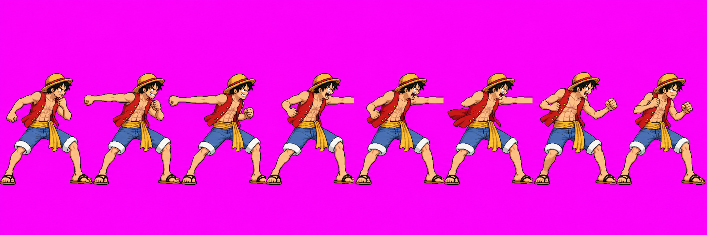
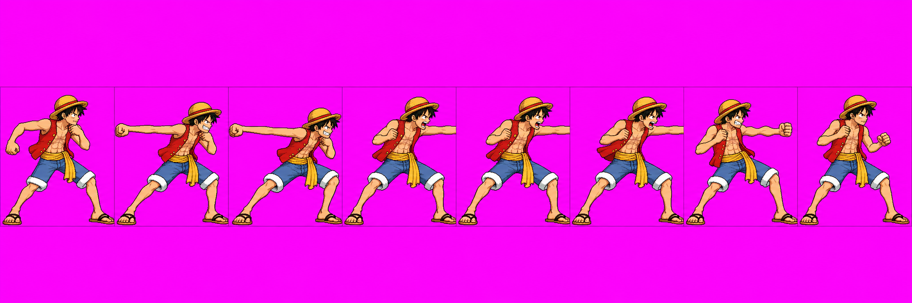
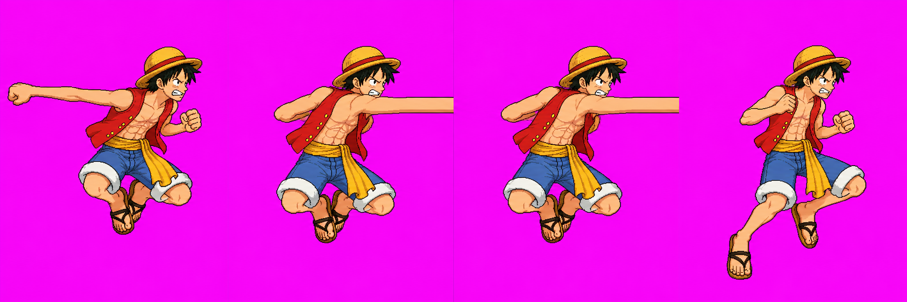
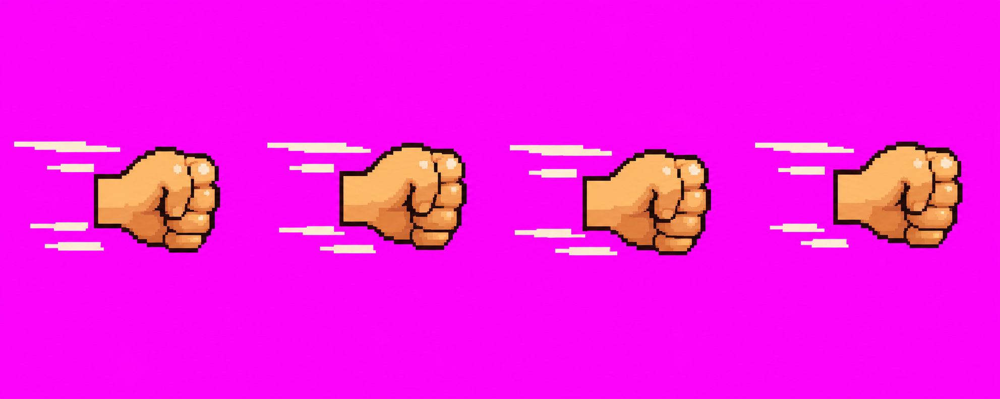

Nothing here is approved. This batch has technical holds. The Pistol strip did not pack cleanly, the air Pistol failed its scale probe, the impact imports as nine frames instead of seven, and no valid gumArm tile was produced. The game's procedural gumArm stand-in remains. Review the drawings as candidates only; visual approval would not clear technical holds.
Character strips

special v04 · selected from call 3. Technical HOLD: importer finds 7/8 frames; adjacent poses touch and f5/f6 clip. No packed comparison is available.

special v03 · call 2, retained in QA hold as a superseded diagnostic.

throw v01 · call 1. Technical HOLD: scale probe reports 1.07–1.21; drawing also misses the pulled-back airborne wind-up. Two retries were generated but did not meet the brief and were not saved.
Effects

gumFist v01 · four-frame candidate. The VFX candidate atlas packed this effect. Unapproved.
All three calls have an empty first frame, so none can serve as the required looping tube tile. Each source is preserved under _qa_hold; the remaining procedural stand-in is used.
node tools/pack-sprites.mjs luffy --quantize 48 --keep-palette failed; no Luffy sheet or candidate frame output was written.
node tools/pack-sprites.mjs vfx --candidates completed. The HD candidate atlas contains gumFist and the malformed 9-frame gumImpact; gumArm is missing.
npm run scale -- luffy generated the existing scale contact sheet. The body sheet could not be generated because the character pack failed.